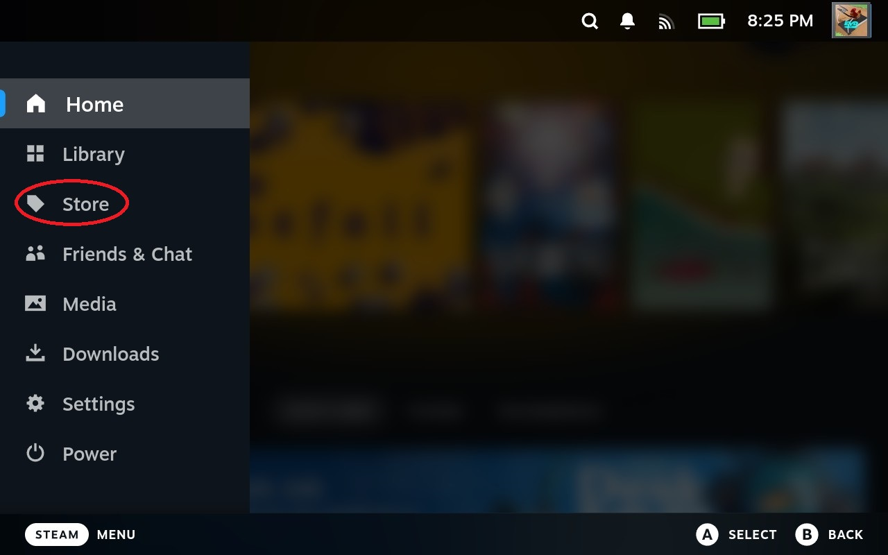
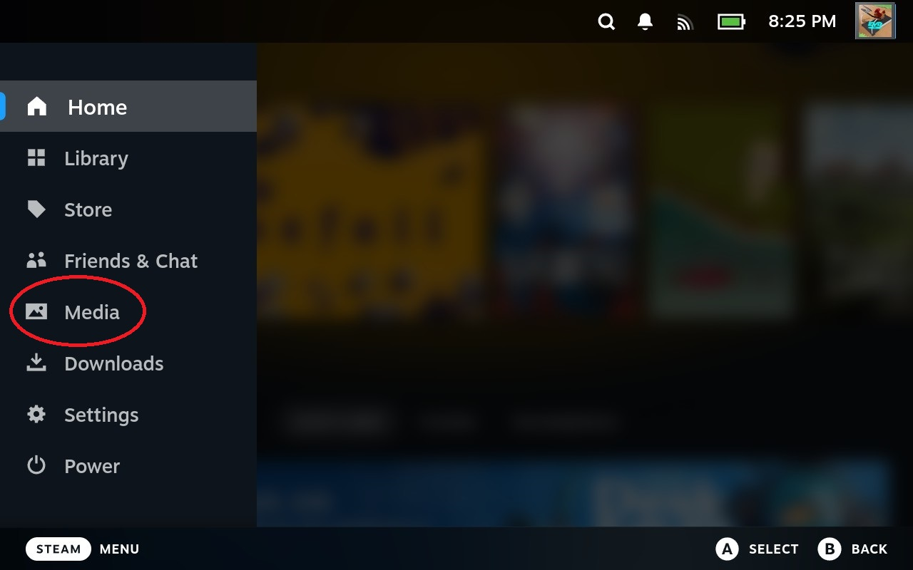

4. The Steam Menu
4.1 Accessing the Steam Menu
The Steam Menu is where you can navigate through the main features of the Steam Deck:
- Home
- Games Library
- The Steam Store
- Friends and Chat
- Media
- Downloads
- Settings
- Power
To access the Steam Menu, press the button.
4.2 Home
The section within the Steam Menu takes you back to the Home Menu:
Figure 1: the Home Menu option in the Steam Menu.
From the Home Menu, you can acess your most recently played games, as well as see what your friends have been playing. You can also view the new games that Steam has recommended for you. Additionally, any major updates or news about your games will appear within this menu.

Figure 2: The Home Menu.
4.3 Games Library
To access your Steam Account game library, select the section from the Steam Menu:

Within this menu, you can find and launch your games on the Steam Deck.
For more about the games and the Games Library, visit: Section 5: Games and the Games Library.
4.4 The Steam Store
The Steam Store allows you to purchase more games on Steam through your Steam Account. To access the Steam Store, select the section from the Steam Menu.
For more on the Steam Store, please go to Section 6: The Steam Store.
4.5 Friends and Chat
The section within the Steam Menu allows you to view what games your friends are playing as well as chat with them.
For more information about this feature, please go to Section 7: Friends and Chat.
4.6 Media
The section allows you to view any screenshots you have taken:
For more information about how to take Screenshots and access them, please go to Section 8: Media.
4.7 Downloads
The section is where you will find the progress of any games you are downloading. You can also view any completed or scheduled updates to your games here.

For more on the Downloads Menu, see Section 9: Downloads.
4.8 Settings
The section allows you to view the Steam Deck's Settings Menu. This menu will give you a more advanced look into the settings for the Steam Deck.
For more on the Settings Menu, see Section 10: Settings.
4.9 Power
The section allows you to view the Steam Deck's Power Menu.
To put your device into sleep mode, select . This will allow your device to start up more quickly when taken out of Sleep Mode. It will lose charge slowly in Sleep Mode. Alternatively, you can press the on the top of the Steam Deck to put it in Sleep Mode.
To shut your Steam Deck down, select . This will turn your device completely off.
If you need to change whose Steam Account you are using, select the section.
To sign out of your account, select .
Selecting allows you to view the Steam Deck's Linux OS desktop.
Selecting leaves the Power Menu.